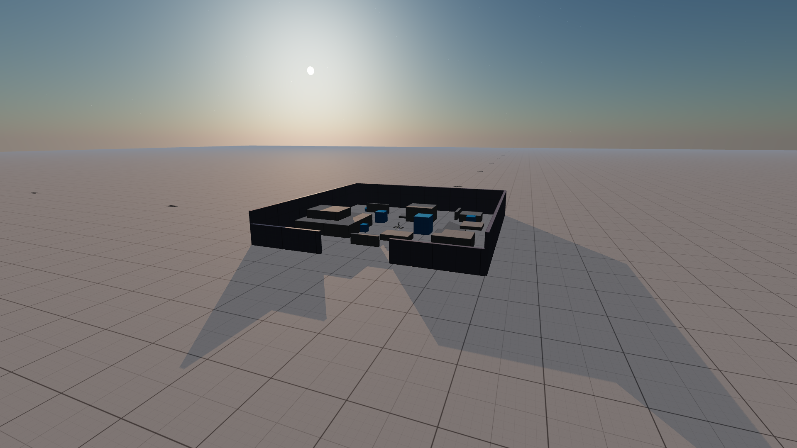

01 / Shape
The first decision is silhouette.
A strong form is easier to judge when topology tools and the object remain in the same visual field.
These are not feature tiles. They are visual evidence: the moments where a tool changes how a scene reads, moves or ships.
Try the desktop build ↗Use the filters to study a different kind of evidence: how the editor exposes structure, how the viewport carries mood and how a final frame comes together.
A strong form is easier to judge when topology tools and the object remain in the same visual field.

The graph is useful because the relationship between inputs, rules and result is never hidden.

Sky response and atmospheric depth turn a technically correct scene into a place with a point of view.

Motion in the environment gives the camera a sense of distance, weight and weather.

Keyframes matter when you can see the rhythm of the shot instead of only its individual values.

Reviewing picture and sound together reveals the last decisions before a scene leaves the editor.